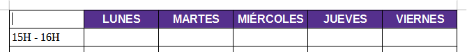
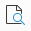

La corrección ortográfica es una herramienta fundamental para garantizar la calidad del texto. Permite detectar y corregir errores de escritura, gramática o puntuación de forma automática o manual. Tanto en Word como en Writer, el corrector subraya las palabras que podrían estar mal escritas y ofrece sugerencias para mejorar el texto, ayudando a mantener una redacción clara y profesional.
En Word, estas opciones se encuentran en la pestaña Revisar → Ortografía y gramática. En Writer, se accede desde el menú Herramientas → Ortografía o con el atajo F7.
Idioma del texto: El idioma para revisar la ortografía se selecciona desde una lista desplegable.
Las palabras desconocidas se resaltan.
Los errores gramaticales se indican con una barra de color claro.
Sugerencias: Contiene posibles reemplazos para la palabra resaltada.
Corregir → cambiar solo esa palabra.
Corregir todo → cambiar todas las veces que aparece esa palabra.
Ignorar una vez → pasa por alto ese error una sola vez.
Ignorar todo → pasa por alto ese error en todo el documento.
Añadir al diccionario → añade la palabra como correcta para futuras revisiones.
Ignorar regla → no aplicar una regla gramatical específica.
Corregir Reemplaza la palabra desconocida o la oración con la propuesta.
Corregir todo Sustituye todas las apariciones de esa palabra.
En las palabras mal escritas, como zientífica debemos pulsar en una de las sugerencias que se muestran debajo (en este caso será científica) y pulsaremos el botón de Corregir todo.
En la última palabra mal escrita (orijen) aparece una primera sugerencia que no es correcta (orinen). Habrá que señalar la sugerencia correcta (origen) y pulsar en Corregir todo.
Una vez corregidas todas las faltas de ortografía, el texto podrá verse sin líneas de subrayado rojo en las faltas de ortografía
Las imágenes enriquecen el contenido visual del documento y facilitan la comprensión de la información. En Word y Writer se pueden insertar desde archivos, la web o el portapapeles, y luego ajustar su tamaño, posición o estilo. Además, es posible aplicar efectos, bordes o alineaciones para integrarlas correctamente con el texto y mejorar la presentación general del trabajo.
En Word, estas opciones se encuentran en la pestaña Insertar → Imágenes. En Writer, se accede desde Insertar → Imagen → Desde archivo….
Insertar imagen En Word: Insertar → Imágenes. En Writer: Insertar → Imagen → Desde archivo….
Cambiar tamaño Ajustar ancho y alto arrastrando las esquinas. Mantener proporciones para evitar deformar la imagen.
Ajustar posición Posicionar la imagen respecto al texto: en línea con el texto, ajuste de texto automático, posición libre.
Alineación Izquierda, derecha, centrada o justificada.
Estilos y bordes Aplicar bordes, sombras o efectos predefinidos.
Recortar Eliminar partes no deseadas de la imagen.
Efectos y formatos Brillo, contraste, filtros o transparencia.
Opciones avanzadas Ajustar propiedades como enlace, texto alternativo, título y descripción.
A continuación colocamos el cursor en el comienzo del primer párrafo e insertamos la imagen con el menú Insertar... Imagen... y seleccionamos la imagen de Steve Jobs desde el directorio de descargas.
Insertar imagen.
Continuamos dando formato a la imagen. Una vez seleccionada la imagen elegimos en el menú Formato... Imagen... Propiedades... o bien con el botón derecho del ratón sobre la imagen elegimos Propiedades. Ahora en la pestaña de Tipo cambiamos las siguientes propiedades y pulsamos en Aceptar.
Pestaña Tipo.
El tamaño de la imagen cambiará, así como su posición.
REsultado parcial/figcaption>
.
En este momento podemos ver que el texto está pegado a la imagen, por lo que debemos añadir un margen para que se vea con más claridad.Volvemos a seleccionar el menú Formato... Imagen... Propiedades... o bien con el botón derecho del ratón sobre la imagen elegimos Propiedades. Ahora en la pestaña de Ajustar cambiamos las siguientes propiedades y pulsamos en Aceptar.
Pestaña Ajustes.
Con esto hemos añadido márgenes a la izquierda y debajo de la imagen con lo que se puede ver mejor el texto alrededor.
Resultado.
A continuación insertamos la imagen de la placa Arduino en el documento con el menú Insertar... Imagen.... Una vez insertada, cambiamos el tamaño de la imagen a 40mm de ancho. Seleccionamos la imagen y escogemos el menú Formato... Imagen... Propiedades... o bien con el botón derecho del ratón sobre la imagen escogemos Propiedades.... Ahora en la pestaña Tipo cambiamos la anchura de la foto a 40mm manteniendo las proporciones, como muestra la siguiente imagen.
Menú Tipo
Ahora cambiamos la posición de la imagen a la izquierda con el botón de alinear imagen . El resultado será el siguiente.
Resultado parcial
Para continuar insertaremos otra vez la imagen de la placa Arduino, cambiaremos su tamaño a 40mm de ancho y la alinearemos a la derecha.Ahora cambiaremos la orientación de la imagen con el botón de reflejar horizontalmente . El resultado será el siguiente.
Resultado parcial
A continuación insertaremos de nuevo la imagen de la placa Arduino y la recortaremos con el botón de recortar imagen para que se vea solo el microcontrolador de la placa.
A continuación vamos a escribir el título que aparece en la imagen inferior e insertamos la imagen de la placa Arduino. Ahora cambiamos el ancho de la imagen a 40mm manteniendo las proporciones y le aplicamos el filtro de imagen Invertir con el botón de filtro de imagen . El resultado será el siguiente.
Resultado parcial ejercicio
Ahora pasaremos con la tecla Return a la fila inferior y volveremos a escribir el título, a insertar la imagen, cambiar su tamaño y aplicarle el filtro Pop Art con el botón de filtro de imagen .El resultado será el siguiente.
6.A continuación pasaremos con la tecla Return a la fila inferior y volveremos a escribir el título, a insertar la imagen, cambiar su tamaño y aplicarle Transparencia al 50% en el cuadro de transparencia .El resultado será el siguiente.
Resultado parcial ejercicio
Para continuar pasaremos con la tecla Return a la fila inferior y volveremos a escribir el título, a insertar la imagen, cambiar su tamaño y aplicarle Contraste al 50% con el botón de color en el cuadro de contraste .El resultado será el siguiente
Resultado parcial ejercicio
Ahora pasaremos con la tecla Return a la fila inferior y volveremos a escribir el título, a insertar la imagen, cambiar su tamaño y aplicarle Color rojo al 30% con el botón de color en el cuadro del color rojo . El resultado será el siguiente.
Resultado parcial ejercicio
Por último pasaremos con la tecla Return a la fila inferior y volveremos a escribir el título, a insertar la imagen, cambiar su tamaño y aplicarle Modo de imagen Escala de grises con el botón de modo de imagen .El resultado será el siguiente.
Resultado parcial ejercicio
Ahora cambiamos el factor de escala al 75% para ver la hoja entera.
Resultado final
Las tablas permiten organizar datos de forma clara y estructurada, facilitando la comparación y comprensión de la información. En Word y Writer se pueden insertar, modificar y dar formato a tablas para adaptarlas al contenido y mejorar su presentación.
En Word, estas opciones están en Insertar → Tabla. En Writer, en Insertar → Tabla.
Insertar tabla
Word: Insertar → Tabla (seleccionar filas y columnas o usar “Insertar tabla”).
Writer: Insertar → Tabla (definir número de filas y columnas).
Añadir o eliminar filas y columnas se realiza mediante botón derecho sobre la tabla → seleccionar “Insertar fila/columna” o “Eliminar fila/columna”.
Ajustar posición Colocar la tabla en línea con el texto o con ajuste alrededor del mismo Botón derecho sobre la tabla → “Propiedades de tabla” → en “Posición” elegir “En línea con el texto” o “Ajuste de texto”
Alineación Botón derecho sobre la tabla → “Alineación” → seleccionar izquierda, derecha o centrada.
Estilos y bordes Mejorar el aspecto visual de la tabla.Seleccionar la tabla → pestaña “Diseño de tabla” (Word) o menú “Tabla” (Writer) → elegir estilo predefinido o personalizar bordes y colores.
Formato de celda Modificar fondo, fuente y alineación del contenido. Seleccionar las celdas → botón derecho → “Formato de celda” → ajustar color, alineación y fuente.
Opciones avanzadas Funciones adicionales para personalizar la tabla. Botón derecho sobre la tabla → elegir opciones como “Combinar celdas”, “Dividir celdas”, “Definir encabezados”, “Repetir filas” o “Insertar fórmula”.
A continuación crearemos una tabla. En el menú Tabla... Insertar tabla... rellenamos el cuadro de diálogo con los siguientes valores.
Columnas = 6
Filas = 8
Estilos = Estilo de tabla predeterminado.
Insertar tabla
Al terminar pulsamos en el botón Insertar y obtendremos una tabla como la de la siguiente figura.
Resultado parcial
Ahora rellenaremos la tabla con los siguientes datos que nos van a servir para diseñar un horario de las tardes.
Resultado parcial
Una vez que tenemos la tabla con los datos vamos a dar formato al texto. Selecciona todas las celdas de arriba pinchando en la celda LUNES y arrastrando hasta la celda VIERNES. Ahora con el botón de Color de fondo de celdas de tabla cambiamos el color de fondo por Añil.
Por último centraremos el texto con el botón . y cambiaremos el tipo de letra a Liberation Sans con estilo Negrita. Esto lo podemos hacer con los botones de la tabla de herramientas o con el menú Formato... Carácter... Pinchamos en la primera celda y el resultado será el siguiente.

Resultado parcial
A continuación repetimos los mismos pasos anteriores para cambiar el formato de las celdas de la izquierda.
Resultado parcial
Para terminar seleccionaremos la primera celda colocando el cursor en ella y con el menú Tabla... Seleccionar... Celda.
Resultado parcial
Una vez seleccionada la primera celda escogemos en el menú Tabla... Propiedades... en la pestaña Borde pinchando con el ratón quitaremos los bordes izquierdo y superior, mientras que mantendremos los bordes derecho e inferior.
Resultado parcial
Ahora podemos ver con el botón de vista de impresión  cómo quedará nuestra tabla al imprimirla.
Resultado final
Añade una fila al final y combina todas sus celdas.
 El procesador de textos¶
El procesador de textos¶{kind=link}


{kind=link}

 . y cambiaremos el tipo de letra a Liberation Sans con estilo Negrita. Esto lo podemos hacer con los botones de la tabla de herramientas o con el menú Formato... Carácter... Pinchamos en la primera celda y el resultado será el siguiente.
. y cambiaremos el tipo de letra a Liberation Sans con estilo Negrita. Esto lo podemos hacer con los botones de la tabla de herramientas o con el menú Formato... Carácter... Pinchamos en la primera celda y el resultado será el siguiente.